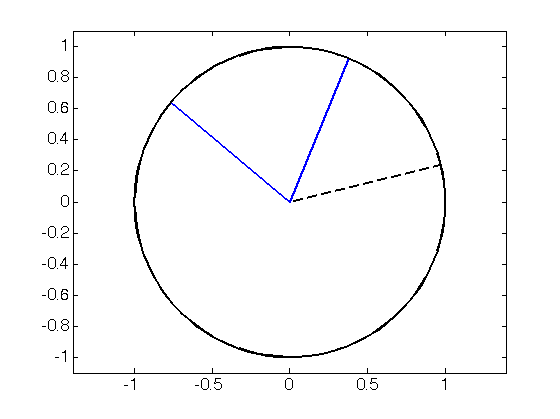

Class 4:
Alex Townsend, 19th Feb 2015 ajt@mit.edu
Contents
- One more thing about LU: "Symmetric LU" is LDL^T
- Now, let's think about the QR decompostion:
- Q = rotation:
- Q = (Householder) reflection:
- Does MATLAB use reflections or rotations?:
- Q has columns that are orthonormal:
- Least Squares: datafitting:
- Is it invertible? Nope. Not even square.
- Solve it using least squares:
- Amazing MATLAB: (Backslash does this for you!)
One more thing about LU: "Symmetric LU" is LDL^T
K3 = toeplitz([2 -1 0]);
[L, D] = ldl( K3 )
[L1, U1] = ldl( K3 );
K3 - L * D * L' % instancely see K3 is symmetric
L =
1.0000 0 0
-0.5000 1.0000 0
0 -0.6667 1.0000
D =
2.0000 0 0
0 1.5000 0
0 0 1.3333
ans =
0 0 0
0 0 0
0 0 0
Now, let's think about the QR decompostion:
[Q, R] = qr( rand(2) ); x = rand(2,1); x = x./norm(x); plot( [0 x(1) + 1i*x(2)],'linewidth',2 ), hold on, t = linspace(0,2*pi); plot( exp(1i*t),'linewidth',2) axis(1.1*[-1 1 -1 1]), axis equal set(gca,'fontsize',16)
y = Q * x; plot( [0 y(1) + 1i*y(2)],'g-','linewidth',2 )
Q = rotation:
t = pi/4+.2; Q = [cos(t) -sin(t) ; sin(t) cos(t)]; x = rand(2,1); x = x./norm(x); for k = 1:100 plot( [0 x(1) + 1i*x(2)],'linewidth',2 ), hold on, t = linspace(0,2*pi); plot( exp(1i*t),'k-','linewidth',2) axis(1.1*[-1 1 -1 1]), axis equal set(gca,'fontsize',16) x = Q * x; drawnow, shg%, pause end
Q = (Householder) reflection:
close all v = rand(2,1); v = v./norm(v); Q = eye(2) - 2*(v*v'); x = rand(2,1); x = x./norm(x); for k = 1:15 plot( [0 x(1) + 1i*x(2)],'linewidth',2 ), hold on, plot( [0 v(1) + 1i*v(2)],'k--','linewidth',2 ), hold on, t = linspace(0,2*pi); plot( exp(1i*t),'k-','linewidth',2) axis(1.1*[-1 1 -1 1]), axis equal set(gca,'fontsize',16) x = Q * x; drawnow, shg%, pause end
Does MATLAB use reflections or rotations?:
n = 8; % change n [Q, R] = qr( randn(n) ); det( Q ) % (Q) = (-1)^(n-1)?
ans = -1.0000
Q has columns that are orthonormal:
n = 2; [Q, R] = qr( randn(n) ); Q'*Q q1 = Q(:,1); q2 = Q(:,2); plot( [0 q1(1) + 1i*q1(2)],'r-','linewidth',2 ), hold on, plot( [0 q2(1) + 1i*q2(2)],'g-','linewidth',2 ), t = linspace(0,2*pi); plot( exp(1i*t),'k-','linewidth',2) axis(1.1*[-1 1 -1 1]), axis equal set(gca,'fontsize',16), hold off
ans =
1.0000 -0.0000
-0.0000 1.0000
Least Squares: datafitting:
A = [0 1 ; 1 1 ; 3 1 ; 4 1]; data = [0 1 3 4]; b = [1 9 9 21]'; plot( data, b, '.', 'markersize', 30), hold on plot( data, 3*data + 3, 'k-','linewidth',2) set(gca,'fontsize',16)
Is it invertible? Nope. Not even square.
det(A)
Error using det Matrix must be square. Error in L4 (line 82) det(A)
Solve it using least squares:
[Q, R] = qr( A ); y = Q'*b; % compute Q'*b x = R \ y; % Solve Rx = Q'*b plot( data, b, '.', 'markersize', 30), hold on plot( data, x(1)*data + x(2), 'k-','linewidth',2) set(gca,'fontsize',16)
Amazing MATLAB: (Backslash does this for you!)
x = A \ b;